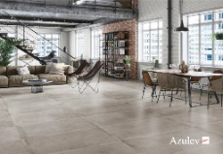
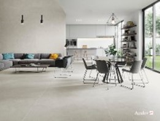
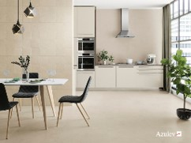
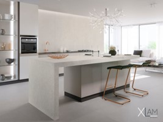
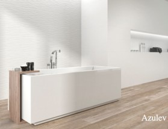

Estilo industrial en la arquitectura de viviendas
- Viene definido por formas asimétricas en la construcción.
- Se caracteriza por la combinación de hierro, madera, aluminio e, incluso, plástico reciclado.
- Líneas sencillas y ausencia de elementos superficiales también son característicos del estilo industrial.
|

|
Espacios abiertos y polivalentes
- Utiliza materiales de construcción que sirvan de nexo entre las estancias unidas y decora toda la estancia de una forma coherente, para ganar en espacio y en luz.
- La integración de la cocina y el salón es la más común en los pisos con pocos metros. Pero también se puede optar por unir el salón con la terraza o el salón con el dormitorio.
|

|
La cocina es la nueva protagonista
- Las tendencias en arquitectura para 2019 dan protagonismo a la cocina, aumentando sus dimensiones y conectándola con el comedor y la sala de estar.
- Puede haber una isla central que sirva de zona de aguas y de barra de desayunos y que separe, visualmente, la zona del salón.
|

|
Menos ruido, más luz
- Los proyectos arquitectónicos se realizan utilizando distribuciones y materiales que minimicen el ruido en el interior de las edificaciones.
- La tecnología arquitectónica se desarrolla para que los edificios aprovechen la luz natural que reciben del sol.Al mismo tiempo, son tendencia los diseños que integran la iluminación artificial de la forma más natural posible.
|

|
El blanco en sus diferentes tonalidades
- En los recubrimientos de paredes y suelos proporciona luminosidad a las estancias y las amplía visualmente.
- Refleja toda la luz recibida, por lo que se recomienda en el caso de habitaciones oscuras o interiores.
|

|